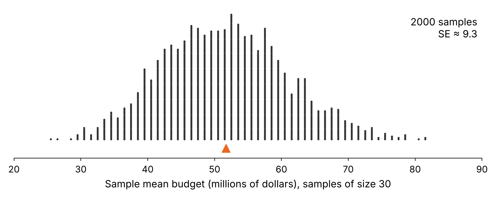
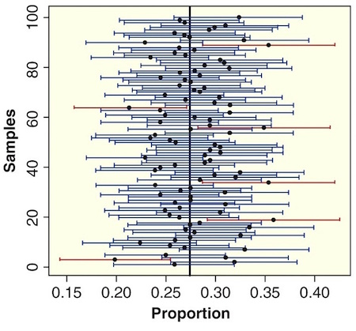

Interval estimate
Interval estimate based on margin of error
Confidence interval
95% confidence interval using the SE
Understanding confidence intervals
Common misinterpretations
An interval estimate gives a range of plausible values for a population parameter.
\[ \text{statistic} \pm \text{margin of error} \] where the margin of error quantifies the precision of the sample statistic as a point estimator of the parameter.
Flip a coin 25 times. Record the number of heads and tails:
| Heads | Tails |
|---|---|
Sample proportion of heads: \(\hat{p} =\) _____________
If you did this many, many times, describe the shape and center of the sampling distribution of sample proportions of heads in 25 flips of a coin.
Recall: your sample proportion was \(\hat{p}\) = _________.
The margin of error for a sample proportion in this situation is known to be 0.20. (We’ll see how to find this later in the course.)
Use this margin of error to find an interval estimate for the true proportion of heads in flipping a coin.
Interval estimate is: ________________ to ________________
Does your interval estimate contain the true proportion of 0.5? _________
Key Point: MOE isn’t the SE. It’s “how many SEs” you need for ~95% capture.
A confidence interval for a parameter is an interval computed from sample data by a method that will capture the parameter for a specified percent of all samples.
The success rate is known as the confidence level
A survey of 1,000 American adults conducted between Sept. 1-17, 2026 found that just 34% “approve of the way the Supreme Court is handling its job.” The survey goes on to say that “The margin of sampling error is +/- 4 percentage points with a 95% level of confidence.”
a) What is the relevant sample statistic? Give appropriate notation and the value of the statistic.
b) What population parameter are we estimating with this sample statistic?
Recall: \(\hat{p} = 0.34\), margin of error = 0.04, 95% confidence.
c) Use the margin of error to give a confidence interval for the estimate.
d) Is 0.37 a plausible value of the population proportion? Is 0.50 a plausible value?
If you had access to the sampling distribution, how would you find the margin of error to ensure that intervals of the form
\[ \text{statistic} \pm \text{margin of error} \]
would capture the parameter for 95% of all samples?
Turn and talk (30–60 sec): Where on the sampling distribution would you put the cut-offs so that the middle 95% of sample statistics is between them?
Because the middle 95% of symmetric bell-shaped sampling distributions spans about 2 SEs from the center, we define a 95% interval as
\[ \text{statistic} \pm 2\text{SE} \]
A sampling distribution is shown for the mean budget (in millions of dollars) of Hollywood movies released in 2018, using samples of size \(n = 30\). The standard error is about 9.3.

a) What margin of error gives a 95% interval of the form \(\bar{x} \pm \text{MOE}\)?
Recall: SE = 9.3 and the true mean budget of all 137 movies is 51.70 million dollars.
b) Use the SE to find the 95% confidence interval for each sample mean below, and indicate which intervals capture the true mean of 51.70.
| Sample mean | 95% confidence interval | Captures 51.70? |
|---|---|---|
| \(\bar{x} = 40\) | ||
| \(\bar{x} = 65\) | ||
| \(\bar{x} = 75\) |
For each of the following, use the information to construct a 95% confidence interval and give notation for the quantity being estimated.
| Information | 95% confidence interval | Quantity estimated | |
|---|---|---|---|
| a) | \(\hat{p} = 0.72\), SE = 0.04 | ||
| b) | \(\bar{x} = 27\), SE = 3.2 | ||
| c) | \(\hat{p}_1 - \hat{p}_2 = 0.05\), margin of error for 95% confidence = 0.02 |
Turn and talk (30–60 sec): In the picture, what does each horizontal line represent? What is the vertical line? Why do a few intervals miss it?

A random sample of 30 roller coasters from a worldwide database of 1,207 coasters has a mean top speed of \(\bar{x} = 71.3\) km/h. The standard error of the sample mean is about 4.3 km/h.
a) Find a 95% confidence interval for the mean top speed of the coasters in the database.
b) Clearly interpret the meaning of this confidence interval in context. What is the parameter?
c) Is 65 km/h a plausible value for the population mean? Is 85 km/h?
A survey of 5,128 Americans in January 2022 found that 71% consider the economy a “top priority” for the president and congress. The standard error for this statistic is 0.006 (or 0.6%).
Find and interpret a 95% confidence interval for the true proportion of all Americans that considered the economy a “top priority” at that time.
Misinterpretation 1
Misinterpretation 2
Misinterpretation 3
A survey conducted by the Pew Research Center in June 2023 asked 10,329 U.S. adults whether they believe the federal government should do more to reduce the effects of climate change and 56% agreed that the federal government should do more. The survey reports a margin of error of ±1.5 percentage points with a 95% confidence level, so the 95% confidence interval for the proportion of U.S. adults who believe the federal government should do more about climate change is 54.5% to 57.5%.
Which of the following statements are correct interpretations? (Select all that apply.)
a) The true proportion of all U.S. adults who believe the federal government should do more about climate change is between 54.5% and 57.5%, with 95% confidence. _______
b) We are 95% confident that between 54.5% and 57.5% of U.S. adults in this sample believe the government should do more about climate change. _______
c) The confidence interval tells us that 95% of the population believes the federal government should do more about climate change. _______
Recall: the 95% confidence interval for the proportion of U.S. adults who believe the federal government should do more about climate change is 54.5% to 57.5%.
d) If we repeated the survey many times, approximately 95% of the resulting confidence intervals would contain the true population proportion of U.S. adults who believe the federal government should do more about climate change. _______
e) We are 95% confident that the proportion of U.S. adults who will believe in the future that the government should do more about climate change will fall between 54.5% and 57.5%. _______
To create a 95% confidence interval for a parameter:
Take many random samples from the population.
Compute the sample statistic for each sample.
Compute the standard error (SE) as the standard deviation of these statistics.
Compute the interval \(\text{statistic}\pm 2\text{SE}\)
But there’s one small problem…
How do we know how much sample statistics vary, if we only have one sample?!?
Stay tuned…